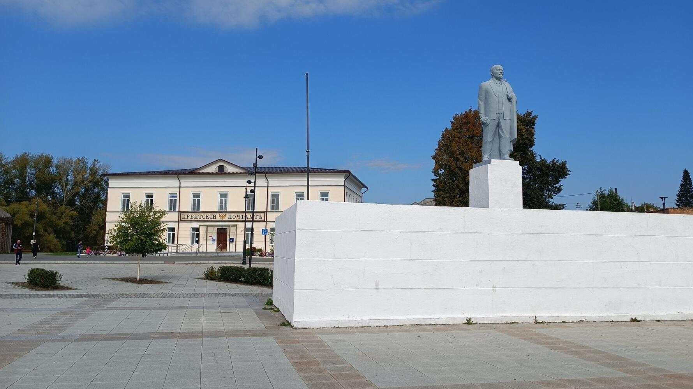

Памятники Ирбита
Память о золотом веке ярмарки
Исторический центр Ирбита — это настоящий музей под открытым небом. Здесь сохранились десятки памятников архитектуры, которые когда-то принадлежали богатым купцам. Главные исторические сокровища города сосредоточены вдоль улицы Ленина (бывшей Никольской).

Среди главных достопримечательностей стоит выделить Пассаж купца Зуева — великолепное здание с арками, где раньше располагались торговые лавки. А также Монумент ирбитским купцам, установленный в память о тех, кто создавал славу и богатство города.
Особого внимания заслуживает памятник Дубовой роще, связанный с забавной историей о том, как купцы привезли в подарок молодой жене одного из своих братьев дубы, которые прижились на уральской земле. Эти места хранят дух купеческого размаха и истории.